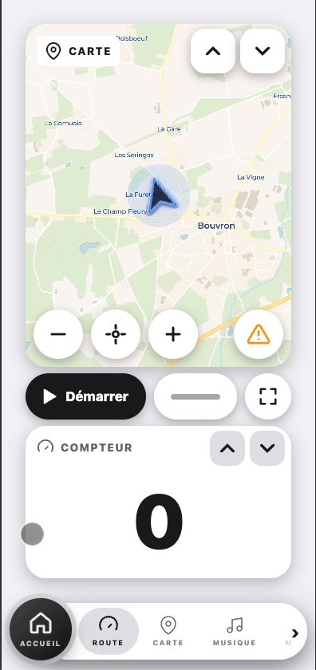

01
Compteur et widgets
Un compteur simple, et deux espaces que tu fais défiler pour afficher la carte, la météo, la musique, l'intercom ou le groupe.
- Espaces redimensionnables
- Mode route sobre, utilisable avec des gants
- Météo actuelle et à l'heure suivante
